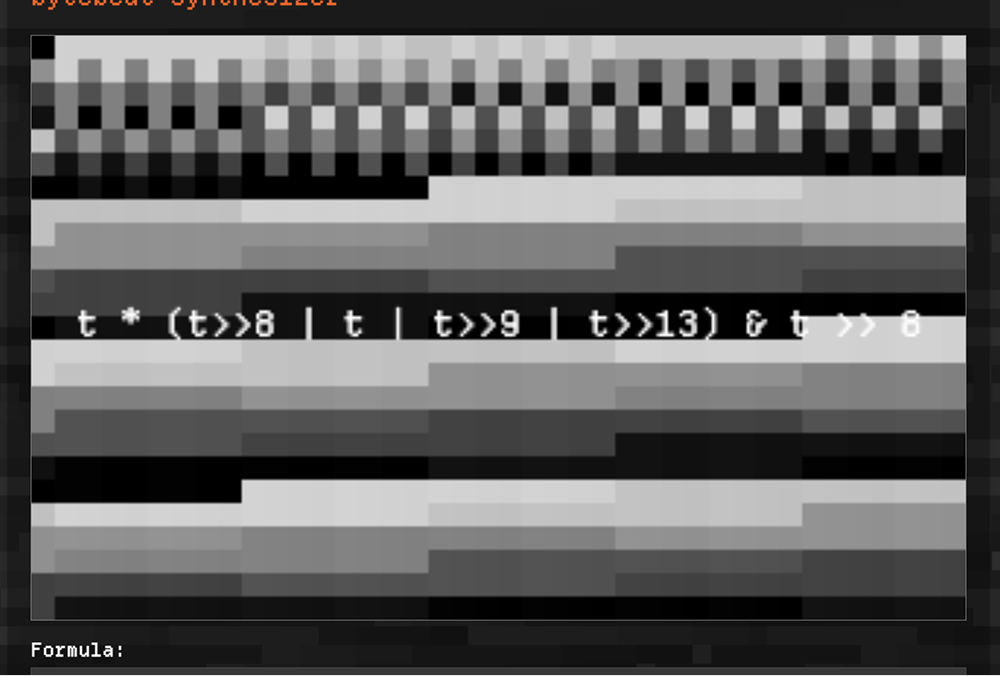
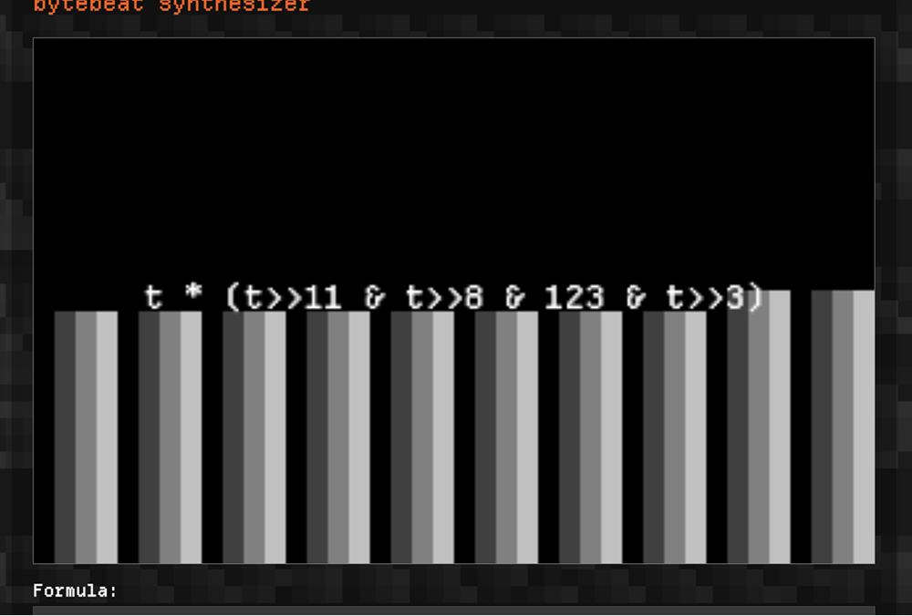
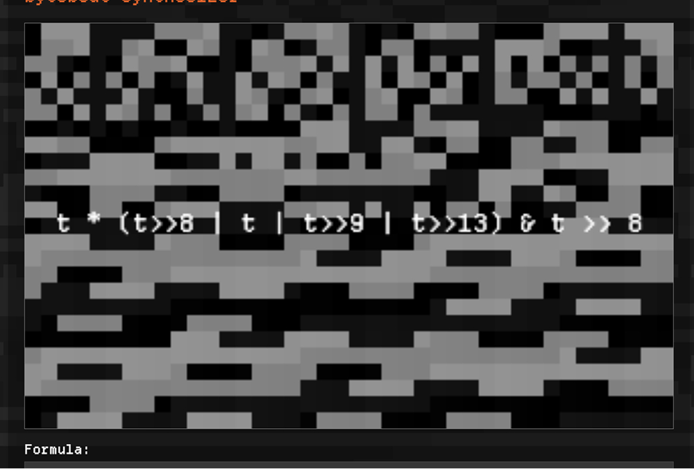

Bytebeat Synthesizer
A web-based audio experimentation tool that allows you to create unique sounds and music using simple mathematical formulas!




A web-based audio experimentation tool that allows you to create unique sounds and music using simple mathematical formulas!


